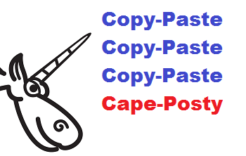
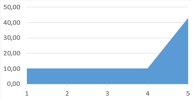

我叫Andrey Karpov，我研究过数百个因"拷贝-粘贴"导致的错误。可以肯定的是，程序员常常会在一大段代码的最后一段里犯错。好像还没有任何编程书讨论过这种现象，因此我决定自己写点什么。我称之为"末行效应"。

末行效应
编程的时候，程序员常常需要写一系列相似的结构。逐行敲键盘输入无聊且低效。这就是为什么他们会使用"拷贝-粘贴"大法：一段代码被拷贝粘贴几次，然后修改。谁都知道这样做的坏处：你很容易在粘贴后忘记修改某些内容最后滋生出问题。不幸的是，常常找不到比这更好的方法。
那么我发现了什么规律呢？我发现错误常常发生在最后的一块粘贴代码里。
下面是一个简短的例子：
inline Vector3int32& operator+=(const Vector3int32& other) {
x += other.x;
y += other.y;
z += other.y;
return *this;
}
注意这一行：”z += other.y;”。程序员忘记把'y'替换成'z'了。
也许你以为这是个假设的例子，然后它其实来自一个真实的应用程序。接下来，我会让你相信这是高频常见的一种错误。程序员们经常在一连串相似操作的结尾犯这种错误。
我听说攀岩者常常在最后的几十米中滑落下来。并不是因为他们累了，而正是由于他们对即将到达的终点过于兴奋，他们想象着成功后的喜悦，变得疏忽大意，最后失足。我猜想程序员们也是这样的。
接下来看一组数据。
研究了数据库后，我分离出了84个代码段由"拷贝-粘贴"大法生成。其中41段中错误发生在中间的某些粘贴块。比如：
strncmp(argv[argidx], "CAT=", 4) &&
strncmp(argv[argidx], "DECOY=", 6) &&
strncmp(argv[argidx], "THREADS=", 6) &&
strncmp(argv[argidx], "MINPROB=", 8)) {
"THREADS="字符串的长度是8个字符，而非6。
另外的43段代码中，错误发生在最后的粘贴块。
当然，43比41大不了多少。但是请注意，一段程序中，可能有很多类似的代码块，因此错误可能发生在第一，第二，第五甚至第十块中。因此在其他代码块中我们有一个相对均匀的分布，而最后一块却存在一个峰值。
平均而言，相似代码块总数为5。
于是前面4个代码块中均匀分布了41处错误，平均每块代码有10个错误。
然而最后一块代码中有43个错误！
下面的分布概图凸显出这个现象：

五块类似代码段中的错误分布概图
因此我们可以总结出一个规律：
在最末的粘贴代码块中出错的概率是其他代码块的4倍。
这个规律可能并没有普适性。它只是个有趣的发现，其实际效用在于：提醒在你写最后一块的时候保持警觉。
实例：
下面我要证明这并不是我的胡思乱想而是有真实的趋势的。请看下面的实例。
当然，我不会列出所有例子，仅列举简单而有代表性的。
Source Engine SDK
inline void Init( float ix=0, float iy=0,
float iz=0, float iw = 0 )
{
SetX( ix );
SetY( iy );
SetZ( iz );
SetZ( iw );
}
最后一行应该是SetW()。
Chromium
if (access & FILE_WRITE_ATTRIBUTES)
output.append(ASCIIToUTF16("\tFILE_WRITE_ATTRIBUTES\n"));
if (access & FILE_WRITE_DATA)
output.append(ASCIIToUTF16("\tFILE_WRITE_DATA\n"));
if (access & FILE_WRITE_EA)
output.append(ASCIIToUTF16("\tFILE_WRITE_EA\n"));
if (access & FILE_WRITE_EA)
output.append(ASCIIToUTF16("\tFILE_WRITE_EA\n"));
break;
最后两行相同。
ReactOS
if (*ScanString == L'\"' ||
*ScanString == L'^' ||
*ScanString == L'\"')
Multi Theft Auto
class CWaterPolySAInterface
{
public:
WORD m_wVertexIDs[3];
};
CWaterPoly* CWaterManagerSA::CreateQuad (....)
{
....
pInterface->m_wVertexIDs [ 0 ] = pV1->GetID ();
pInterface->m_wVertexIDs [ 1 ] = pV2->GetID ();
pInterface->m_wVertexIDs [ 2 ] = pV3->GetID ();
pInterface->m_wVertexIDs [ 3 ] = pV4->GetID ();
....
}
最后一行冗余代码来自于惯性粘贴。数组的大小是3。
Source Engine SDK
intens.x=OrSIMD(AndSIMD(BackgroundColor.x,no_hit_mask),
AndNotSIMD(no_hit_mask,intens.x));
intens.y=OrSIMD(AndSIMD(BackgroundColor.y,no_hit_mask),
AndNotSIMD(no_hit_mask,intens.y));
intens.z=OrSIMD(AndSIMD(BackgroundColor.y,no_hit_mask),
AndNotSIMD(no_hit_mask,intens.z));
程序员忘记把最后一行的中的"BackgroundColor.y"改成"BackgroundColor.z"。
Trans-Proteomic Pipeline
void setPepMaxProb(....)
{
....
double max4 = 0.0;
double max5 = 0.0;
double max6 = 0.0;
double max7 = 0.0;
....
if ( pep3 ) { ... if ( use_joint_probs && prob > max3 ) ... }
....
if ( pep4 ) { ... if ( use_joint_probs && prob > max4 ) ... }
....
if ( pep5 ) { ... if ( use_joint_probs && prob > max5 ) ... }
....
if ( pep6 ) { ... if ( use_joint_probs && prob > max6 ) ... }
....
if ( pep7 ) { ... if ( use_joint_probs && prob > max6 ) ... }
....
}
程序员忘记把最后一个判断中的"prob > max6"改为"prob > max7"。
SeqAn
inline typename Value<Pipe>::Type const & operator*() {
tmp.i1 = *in.in1;
tmp.i2 = *in.in2;
tmp.i3 = *in.in2;
return tmp;
}
SlimDX
for( int i = 0; i < 2; i++ )
{
sliders[i] = joystate.rglSlider[i];
asliders[i] = joystate.rglASlider[i];
vsliders[i] = joystate.rglVSlider[i];
fsliders[i] = joystate.rglVSlider[i];
}
最后一行应该用rglFSlider。
Qt
if (repetition == QStringLiteral("repeat") ||
repetition.isEmpty()) {
pattern->patternRepeatX = true;
pattern->patternRepeatY = true;
} else if (repetition == QStringLiteral("repeat-x")) {
pattern->patternRepeatX = true;
} else if (repetition == QStringLiteral("repeat-y")) {
pattern->patternRepeatY = true;
} else if (repetition == QStringLiteral("no-repeat")) {
pattern->patternRepeatY = false;
pattern->patternRepeatY = false;
} else {
//TODO: exception: SYNTAX_ERR
}
最后一块少了'patternRepeatX'。正确的代码应该是：
pattern->patternRepeatX = false; pattern->patternRepeatY = false;
ReactOS
const int istride = sizeof(tmp[0]) / sizeof(tmp[0][0][0]); const int jstride = sizeof(tmp[0][0]) / sizeof(tmp[0][0][0]); const int mistride = sizeof(mag[0]) / sizeof(mag[0][0]); const int mjstride = sizeof(mag[0][0]) / sizeof(mag[0][0]);
'mjstride'永远等于1。最后一行应该是：
const int mjstride = sizeof(mag[0][0]) / sizeof(mag[0][0][0]);
Mozilla Firefox
if (protocol.EqualsIgnoreCase("http") ||
protocol.EqualsIgnoreCase("https") ||
protocol.EqualsIgnoreCase("news") ||
protocol.EqualsIgnoreCase("ftp") || <<<---
protocol.EqualsIgnoreCase("file") ||
protocol.EqualsIgnoreCase("javascript") ||
protocol.EqualsIgnoreCase("ftp")) { <<<---
最后的"ftp"很可疑，它之前已经被比较过了。
Quake-III-Arena
if (fabs(dir[0]) > test->radius ||
fabs(dir[1]) > test->radius ||
fabs(dir[1]) > test->radius)
dir[2]的值忘记检查了。
Clang
return (ContainerBegLine <= ContaineeBegLine &&
ContainerEndLine <= ContaineeEndLine &&
(ContainerBegLine != ContaineeBegLine ||
SM.getExpansionColumnNumber(ContainerRBeg) <=
SM.getExpansionColumnNumber(ContaineeRBeg)) &&
(ContainerEndLine != ContaineeEndLine ||
SM.getExpansionColumnNumber(ContainerREnd) >=
SM.getExpansionColumnNumber(ContainerREnd)));
最后一块，"SM.getExpansionColumnNumber(ContainerREnd)"表达式在跟自己比较大小。
MongoDB
bool operator==(const MemberCfg& r) const {
....
return _id==r._id && votes == r.votes &&
h == r.h && priority == r.priority &&
arbiterOnly == r.arbiterOnly &&
slaveDelay == r.slaveDelay &&
hidden == r.hidden &&
buildIndexes == buildIndexes;
}
程序员把最后一行的"r"忘记了。
Unreal Engine 4
static bool PositionIsInside(....)
{
return
Position.X >= Control.Center.X - BoxSize.X * 0.5f &&
Position.X <= Control.Center.X + BoxSize.X * 0.5f &&
Position.Y >= Control.Center.Y - BoxSize.Y * 0.5f &&
Position.Y >= Control.Center.Y - BoxSize.Y * 0.5f;
}
最后一行中，程序员忘记了两个地方。首先，">="应改为"<="，其次，减号应改为加号。
Qt
qreal x = ctx->callData->args[0].toNumber();
qreal y = ctx->callData->args[1].toNumber();
qreal w = ctx->callData->args[2].toNumber();
qreal h = ctx->callData->args[3].toNumber();
if (!qIsFinite(x) || !qIsFinite(y) ||
!qIsFinite(w) || !qIsFinite(w))
最后一个qlsFinite中，传入参数应该是'h'。
OpenSSL
if (!strncmp(vstart, "ASCII", 5)) arg->format = ASN1_GEN_FORMAT_ASCII; else if (!strncmp(vstart, "UTF8", 4)) arg->format = ASN1_GEN_FORMAT_UTF8; else if (!strncmp(vstart, "HEX", 3)) arg->format = ASN1_GEN_FORMAT_HEX; else if (!strncmp(vstart, "BITLIST", 3)) arg->format = ASN1_GEN_FORMAT_BITLIST;
字符串"BITLIST"长度为7，而非3。
就此打住吧。我举的例子已经够说明问题了吧？
结论
本文告诉你"拷贝-粘贴"大法在最后一个粘贴代码块中出错的概率很可能是其他块的4倍。
这跟人类的心理学有关，与技术水平无关。文中说明了即便是像Clang或者Qt项目中的编程高手也会犯这种错误。
我希望这个现象的发现对于程序员们有所帮助，也许可以促使他们去研究我们的bug数据库。相信如此有助于在这些错误中发现新的规律并总结出新的编程建议。
本文转载自：http://www.vaikan.com/the-last-line-effect/
点我分享笔记
<p style="font-size:14px;">笔记需要是本篇文章的内容扩展！</p><br> <p style="font-size:12px;"><a href="../tougao.html" target="_blank">文章投稿，可点击这里</a></p> <p style="font-size:14px;"><a href="./runoob-user-test-intro.html" target="_blank">注册邀请码获取方式</a></p> <h3 class="text-muted"><i class="fa fa-info-circle" aria-hidden="true"></i> 分享笔记前必须<a href=".." class="runoob-pop">登录</a>！</h3> <p><a href="./runoob-user-test-intro.html" target="_blank">注册邀请码获取方式</a></p>